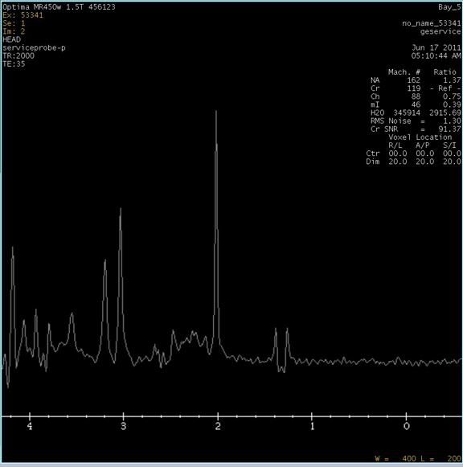

| NOTE: | This test takes about six minutes. |
| NOTE: | Press <Ctrl><C> to stop the tool. |
Probe-P Cal Started xshim= -1 yshim= 5 zshim= 2 APS: R1=13 R2=30 TG=190 CF=127762262 deltay_val: -0.670430 Y Axis Calibration completed Successfully deltax_val: 0.576271 X Axis Calibration completed Successfully deltaz_val: -0.180328 Z Axis Calibration completed Successfully
This message appears after the completion of the three axis:
Probe/P Tuning completed successfully Results are stored in /usr/g/caldir/probep_cal.log Press [Enter] to quit -->
Illustration 6: Probe/P Report
